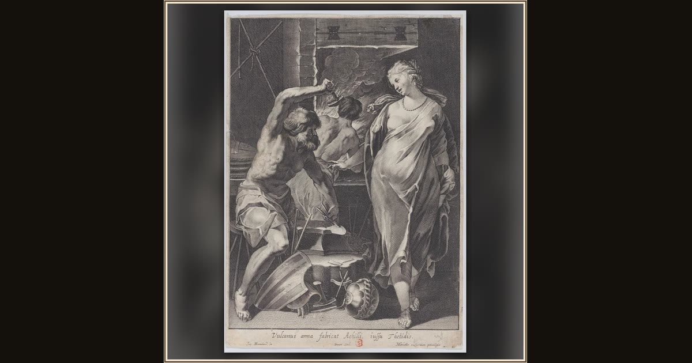

Vulcan forging the armor of Achilles
Pierre Daret · 1624–75 · met
Vulcan, the Roman Hephaestus, raises his hammer at the anvil, a shield and helmet at his feet, while Thetis stands by; Homer's smith turns to his bellows and anvil (18.468–477). Explore its place in Homer's Iliad, Book XVIII, line 468.